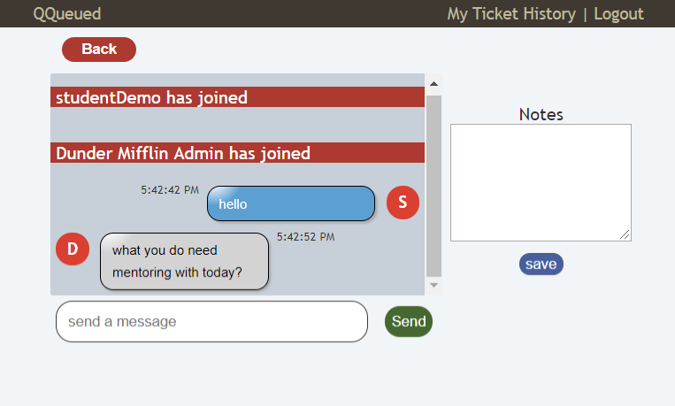
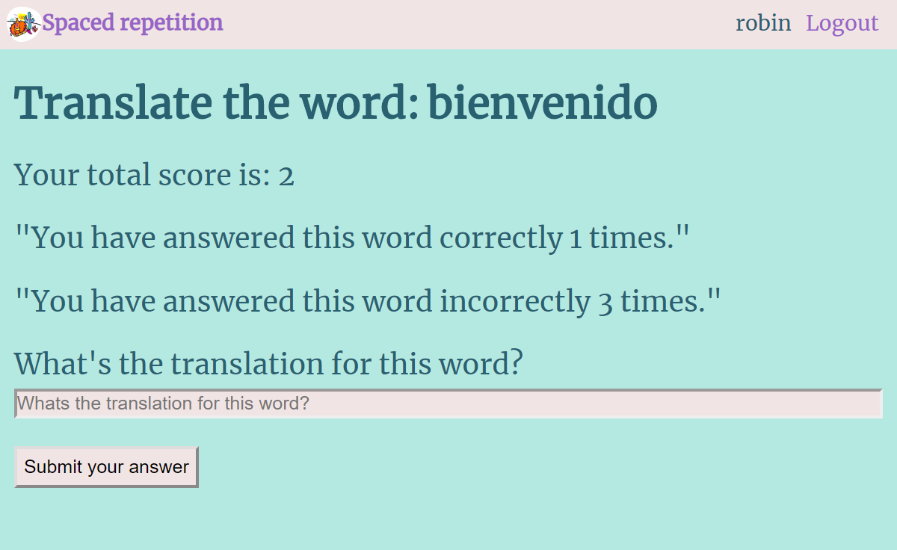
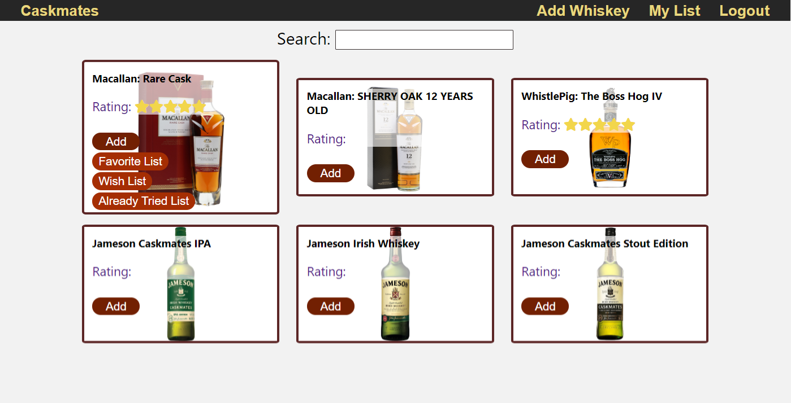
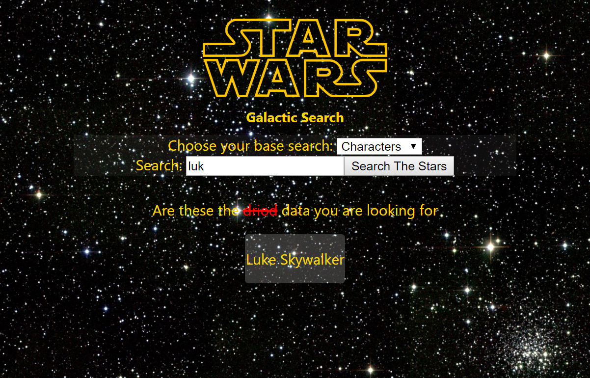

Hi, I'm Robin
software engineerworld traveler
car enthusiast
About Me

Growing up, I have always had a fascination with how things worked. I would take apart automobile engines just to reassemble it back together again. I loved seeing how various components worked collectively in creating the final product.
My curiosity did not end there, as I took things into the virtual world. I became interested in how web pages worked, and soon that interest blossomed into a passion for coding and solving unique problems.
On my free time, I enjoy rebuilding classic cars, snowboarding, and exploring a new city. I have been to 14 countries and almost half of the states in America. I also enjoy watching movies and am really captivated in the Marvel Universe.
Projects
-

QQueued
QQueued is a tool to help deal with communication between students and mentors. Students are able to create help tickets through the application or via Slack and are able to track where they are in line. The application is a visual queue, allowing mentors to be even more transparent with the students in the sense that the students will now know where the mentors are. There's also a private chatroom and a dynamic queue that is updating in realtime as request continues to transmute.
Technologies Used: HTML, CSS, Javascript, React, Node.js, Express, PostgreSQL
-

Spaced Repetition
While adopting a new language can be tricky, acquiring certain words in intervals can help you learn more efficiently. Spaced repetition is written using a singlely link data structured algorithm. The application tests the user with a word in the desired language. Depending on if the answer is right or wrong, the word will be pushed further down the list to a certain amount of spaces.
Technologies Used: HTML, CSS, React(Router, Context), WebSocket, JEST, Node.js, Express.js, Postgresql, socket.io, Slack API, Dev-Tools, Mocha/Chai, Supertest
-

Caskmates
Cask Mates is an interactive application where you can browse through a dataset of whiskeys and select specific whiskeys that tailor to your specific taste palates. Once you are able to find a whiskey that appeals to your taste buds you can add them to a choice of three lists that can by your Favorites, Wish or Already Tried list.
Technologies Used: HTML, CSS, Javascript, React, Node.js, Express, PostgreSQL
-

Star Search
A simple application that you can search for your favorite Star Wars reference. This neat application will gather matching data from a public Star Wars API and will tether the information back to your screen.
Technologies Used: HTML, CSS, React